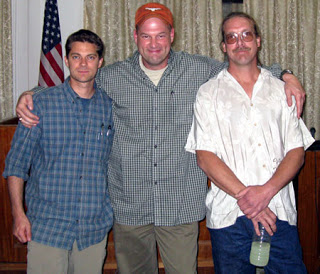

George W. BUSH: One of the major theaters against al Qaeda turns out to have been Iraq. This is where al Qaeda said they were going to take their stand. This is where al Qaeda was hoping to take– Martha RADDATZ: But not until after the U.S. invaded. BUSH: Yeah, that’s right. So what?
President Bush's interview on ABC News in Baghdad, December 15.

Sgt. Evan Vela Carnahan, 25, has served roughly one year of a ten-year sentence at the Ft. Leavenworth Military Prison. In November 2007, he was convicted of murdering an Iraqi civilian named Genei Nasir Khudair al-Janabi, whom he killed with a single shot to the head from a 9mm sidearm.
The killing took place just a few hundred feet from Janabi's home, which is located in a Sunni-dominated neighborhood in Baghdad near Iskandariyah in a region sometimes called the "Triangle of Death." Evan admits that he killed Janabi in compliance with a direct order issued by his squad leader. The squad leader -- who was acquitted of a murder charge -- admits that he gave the order, and stated under oath that he would have killed Janabi himself except for the fact that Evan was the one with the pistol in his hand.
During the past six years, the Bush Regime has followed an inverted Nuremberg formula -- call it the "Abu Ghraib Doctrine" -- under which the legal accountability for war crimes resides only with those at the bottom of the chain of command. To palliate public opinion in Iraq, a handful of low-ranking soldiers were sent to prison after the Abu Ghraib atrocities were made public.
Evan Carnahan was sent to prison for much the same reason: The killing of Janabi, which took place on May 11, 2007, came just as the much-heralded "surge" began, a program in which U.S. occupation commanders pacified the Sunni Triangle by bribing the leaders of the Sunni insurgency.
Curtis Carnahan, Evan's father (and a close personal friend of mine from High School), told Pro Libertate that "the Iraqi Human Rights Minister was present at every session of Evan's military trial, which the Army insisted on holding in Baghdad.... The trial didn't begin until November [of 2007], after Evan's unit had returned to Alaska. They could have brought Evan back to the United States, and we repeatedly filed motions to have the trial moved stateside. Instead, the Army, at great unnecessary expense, held the trial in Iraq, under the constant scrutiny of Iraqi officials. It's clear to me that Evan was being used as a scapegoat, as a political sacrifice, in order to appease Iraqi government officials."
Evan was part of a five-man sniper team that had implanted itself in a "hide" behind an earthen berm. Over the previous four days the team had been able to sleep no more than 3-4 hours during each 24-hour cycle, and what sleep they had was divided into fifteen-minute segments. This was typical of the 56 missions Evan's team had carried out under Staff Sergeant Michael A. Hensley, an Expert Marksman tasked to increase the "kill rate" of suspected "insurgents" in the area.
Hensley -- described in an Esquire story as a twitchy, tatooed collection of eccentric mannerisms and nihilistic opinions -- was one of the most proficient snipers in the U.S. Army, a "natural-born killer."
Evan was adopted by Curtis (who runs a printing business in eastern Idaho) as a child. The Army insists on calling him Sgt. Vela because of a clerical matter involving his Social Security Card. He was, by all accounts, an exemplary soldier who did not check his conscience at the door when he left for combat.

Before shipping out for Iraq, Evan expressed his ambivalence about killing Iraqis to his LDS (Mormon) Bishop. The spiritual counsel he received, as encapsulated in a videotape prepared by church authorities, was that he would not be held accountable by God for shedding the blood of Iraqis as long as he went to war "in a spirit of love."
This is anodyne advice of no practical or moral value in a war of aggression in which every U.S. soldier who kills in self-defense is actually committing murder. Since the U.S. government had no moral right or legal authority to invade Iraq, U.S. military personnel in that country are the equivalent of robbers suddenly confronted by an armed homeowner: A robber in that situation has no right to defend himself by force.
This isn't to say that every American serviceman in Iraq intended to behave like an armed robber, or that they deserve to be killed. It is to say that they shouldn't have been sent there in the first place, and that justice requires not only that we totally withdraw from Iraq but also prosecute and punish of those responsible for planning and ordering the invasion.
Evan's case offers a particularly poignant example of the multi-layered injustices that have blossomed from the Bushling's unnecessary war.
Early on the morning of May 11, Evan -- who had been assigned guard duty, but (given his human limitations) inevitably found himself dozing off -- awoke to find himself staring into the startled face of Genei al-Janabi, who had stumbled onto the sniper squad's "hide" on his way to fetch water. The squad soon awoke, and Janabi was taken prisoner. Shortly thereafter, Janabi's teenage son materialized and was likewise taken into custody.
Hensley now confronted a predicament. His squad had been sent to ferret out suspected insurgents in what was, at the time, a very active battle zone. Their position had been compromised, and the elder Janabi, understandably terrified, began to thrash and cry out for help. Helmsley decided to release the son. As soon as the teenager had departed, Hensley turned to Evan and ordered him to kill Janabi. Evan did as he was ordered.
Immediately thereafter, Hensley ordered the squad to plant an AK-47 on Janabi's dead body. He also began to concoct cover story; this involved multiple spurious radio calls to Lt. Matthew Didier at the squad's patrol base describing concerns about a suspected insurgent and requesting permission to kill him.
The killing of Janabi, Hensley later explained, "is legitimate to me; it's not legitimate to the law. So I [had] two choices. I can do something illegal, like put a gun on him, or I can go to jail for murder. I don't know where you stand ethically on all of that, but that is what it is. And if doing something that is a little dishonest keeps me and my men from going to jail one day, I am going to be a little dishonest. If the law causes my men to get killed, the law will be broken. If lying prevents me from going to jail, I'm going to lie."
Al-Janabi, Hensley insisted, had to die because he was "making too much f*****g noise" and thus imperiled the lives of his men. As a field commander, Hensley decided that the Iraqi, who was in his own neighborhood, looking for water on his own property, "had no right to be there, he was a bad guy, he deserved to die."
So he ordered Evan Carnahan to shoot the man in the head. And Carnahan, trained by the military to obey reflexively, and taught by his church leaders that obedience to authority expunges the taint of criminal actions, pulled the trigger, believing that his action was legally sound and morally right.
After the Sunni Buy-Out -- aka "Surge" -- began, the shooting of Janabi became a local political controversy, and the Army sicced the Criminal Investigative Division on Hensley and his squad. Hensley, whose conscience is as flexible as a Cirque du Soleil performer, brazened out the interrogation.
Evan broke down under questioning. He was offered immunity to testify against Specialist Jorge Sandoval and S. Sgt. Hensley. Both Sandoval and Hensley were acquitted of murder and convicted of lesser offenses. Both of them were given sentences equivalent to time already served in pre-trial detention.
Despite his immunity agreement, Evan was brought to trial. Hensley -- who, having been acquitted of murder, had nothing to lose -- testified on Evan's behalf. He eagerly, perhaps even giddily, admitted to being the instigator of Janabi's death, describing Evan's role as merely that of carrying out what the soldier believed to be a lawful order.
Curtis Carnahan, who made three long, expensive trips to Baghdad for Evan's pre-trial hearings and criminal trial, told me that the eight-member trial panel who heard the case "was hand-picked by General Rick Lynch," the appropriately surnamed commander of the 3rd Infantry Division, whom Carnahan describes as "a smug, narcissistic son-of-a-bitch." Lynch's priority at the time was to placate Iraqi officials. This was necessary, in turn, to ensure the "success" of the "Surge," which itself was intended to neutralize growing American antipathy toward the war.
Given all of these considerations, someone had to be fed to the wolves, and Evan happened to be the only suitable candidate.


A Father seeks justice: Curtis Carnahan (right) during one of his trips to Baghdad on behalf of his son, Evan.According to Curtis, the Army had a file on Janabi suggesting that "he was a bad guy. And several people with detailed knowledge of the region have developed intelligence confirming that the al-Janabi tribe was either active in al-Qaeda, or collaborating with them."
Of course, just days after Janabi was killed, collaborating with suspected al-Qaeda operatives became official U.S. military policy in Iskandiriyah. It's also worth recalling the exchange quoted in the epigram above, in which George W. Bush, when confronted with the charge that it was his invasion and occupation of Iraq that resulted in Iraq becoming infested with al-Qaeda, replied: "So what?"
Bush infused those two syllables with his proprietary blend of bellicose ignorance and arrogant dismissiveness. Yes, he was admitting, the invasion created a morass of guerilla violence and a breeding ground for terrorism where none previously existed -- but that's not important. The implicit question is: If this isn't important -- if there were no WMDs, and the invasion actually enhanced the terrorist threat -- why did the U.S. invade Iraq?
An observation offered Curtis Carnahan is suggestive of an answer.
"Everything I saw while I was over there suggests that they're not going to pull out," Curtis told me. "There was construction going on everywhere -- more buildings, more concrete, more everything at Camps Victory and Liberty. They're definitely settling in for a long haul."
This underscores the fact that the invasion and occupation of Iraq was pure military colonialism. It wasn't intended to "liberate" a country long ruled by a U.S.-installed surrogate thug, much less to protect the United States and its inhabitants from any "threat" posed by that tiny, insignificant country. The objective was always to seize control over Iraq and use it as a staging base to assert military and political control over the region's energy resources -- an objective that will be followed irrespective of the new agreement with "independent" Iraq.
Curtis, as I mentioned earlier, is an old friend of mine (he was, in fact, my vice president when I was president of the Madison High School Class of 1981). He sees the war in starkly different terms than I do, insisting that the correct approach is to "cut off their heads and crush them -- we should be acting like a conquering army, forcing them to submit to our will." Like many other people I know, including many I love and respect, he doesn't appear troubled by the prospect of living under a government capable of exercising powers of the sort he describes. But due to what his son has experienced, Curtis does have a better understanding of the incurable corruption that infects every element of the Regime that rules us.

She's not saying "Bush is Number One!" Evan Carnahan's sister, during a visit to Mordor, expresses her opinion of George W. Bush and the Regime he briefly ruled. (Photo courtesy of Curtis Carnahan.)
To justify an act of murder, Hensley fixed the "facts" around his decision to justify the killing. This was perfectly in harmony with the conduct of his Commander-in-Chief. When that decision created a local public relations problem, the soldier who pulled the trigger was offered as a sacrifice to political expediency; this, too, is perfectly in accord with Mr. Bush's priorities.
Among the clear lessons taught by this abhorrent case is this: Those who understand and cherish individual liberty should never allow themselves to become the agents of another person's will.
Evan Carnahan is merely one of countless thousands of fundamentally decent Americans whose earnest patriotism led them to participate in a world-historic crime. Unlike most of them, however, Evan is now in prison while those who used him to carry out that crime are free -- and his only hope for freedom, at present, is an act of clemency from the War Criminal in the White House.

On sale now.
Dum spiro, pugno!
47 comments:
"Everything I saw while I was over there suggests that they're not going to pull out," Curtis told me. "There was construction going on everywhere -- more buildings, more concrete, more everything at Camps Victory and Liberty. They're definitely settling in for a long haul."
No doubt that was an observation made on more than one occasion about the Roman Legions in various parts of the world during the Fourth and Fifth centuries. Unlike their Amerikan Imperial descendants, however, the Romans often left behind things that were beneficial to the indigenous occupied populations (e.g., acquaducts), not to mention some darned fine architecture. What kind of impression will the newly dedicated Imperial Embassy in Baghdad or the buildings at Balad, Camp Victory, and the other imperial garrisons erected in the Mesopotamian region over the last five years make to the observer a century from now, long after they've been abandoned and the Empire that built them an unpleasant memory of history?
The indictments against the Germans at Nuremberg were; Participation in a common plan or conspiracy for the accomplishment of crime against peace, Planning initiating and waging wars of aggression and other crimes against peace, War Crimes, and Crimes against humanity. I really see no moral or ethical difference between what Germany did in Poland and what the US (Government dually elected by the people) did in Iraq. I actually left the military after 15 years forfeiting a pension and lifetime medical because I could not square my belief system to what we were getting ready to do in Iraq. That being an invasion of a country that had not attacked us and was no threat to us. Soldiers, Sailors, and Airmen are not required to follow unlawful orders. In real life people in the military do what they are told so I can empathize with this kid thinking he was "only following orders". It reminds me of the quote by Martin Sheen in Apocolypse Now when he says that "charging people with murder in Nam was like handing out speeding tickets at the Indy 500". However I am also reminded that the Allies did not accept the only following orders defense at Nuremberg. In the end I have only two observations. I was asked by a colleague what I thought about his sons chance of being sent to Iraq after having recently signed up for the US Army. I replied that one way to ensure you would not be sent to Iraq was to not sign up for military service. My second observation is that if this kid ends up serving his whole bit at Levenworth then certainily his cellmate should be the "enabler" President George Bush. Without Bush's arrogance, lack of intellect, lack of knowledge of history, and patience in dealing with Al Queda with non military means this kid would not even be in a position to shoot a man in the head with a pistol because he was being loud.
Murder is murder whether conducted by the lowliest foot soldier or the highest ranking admiral. Mr Evan could have refused and been thrown into the brig - his lowly cowardice took precedent. According to the standards of God he has sinned - period.
Stuart B
If anyone ever says, "You don't have to support the war, but you have to support the troops," say, "Of course. And you don't have to support rape, but you must support the rapists."
-Sans Authoritas
Mr. Grigg,
Have you ever watched the Australian movie, "Breaker Morant," set during the Boer War? I highly recommend it. The scapegoating you describe here is probably as old as our species. I think it even occurs among the chimpanzees. If a chimpanzee cannot attack the chimp that disturbed him, he will pick an innocent weaker chimp to attack.
We humans may have built magnificent cathedrals and temples, but some of us have failed to evolve. Some of us are throwbacks all the way to some scrabbling, clawed, hairy, lice-ridden vermin.
Chief among those throwbacks is the degenerate Chimpanzee Bush, a horrible man more hate-filled and vicious by far than Adolf Hitler. At least Hitler loved and was beloved in turn by children and animals. (Apart from a few deadly obsessions, Hitler was a warm and kindly man.) George Bush as a child used to put cherry bombs up the anuses of frogs to see how far the bits would fly. (Source: "Bush on the Couch," by Justin Frank).
The Bush Administration and the Republican Party of the last 8 years have been a signal triumph of pure hateful evil over human decency. How long it will take to restore this nation to mental health, if it is even possible, cannot be imagined.
I pray that your friend's son may have his sentence reduced or committed by Mr. Obama. It is probably his only hope now.
Sincerely,
Lemuel Gulliver
Lemuel, when I spoke with Curtis yesterday about his son's situation, I asked him if he's seen "Breaker Morant." I saw that film while I was in college, and it made a profound impression on me.
Edward Woodward (better known here as ex-CIA renegade McCall from "The Equalizer," a surprisingly well-produced and politically perceptive 1980s action show) was spectacular in that film. Wasn't Bryan Brown, aka Mr. Rachel Ward, also in that movie as a soldier spared the firing squad?
I feel sorry for the young man, who in today's military or even in WW2 would disobey a DIRECT ORDER from a commanding officer? So this fellow was obviously set up.
Think back to all the killings and destruction of environment that happened during 'Nam, yet they made a HUGE DEAL over William Calley.
Hypocrites.
as long as he went to war "in a spirit of love."
That is high-class double-talk if I've ever read any. LDS folks are pretty good folks overall but that leadership is another story.
What does Evan think? Does he maintain his innocence? Does he still maintain some kind of sick esprit de corp, loyalty to the Army and the US gov't that has left him to rot in a cell? Has he reconciled his feelings about the military at the time of his enlisting with his feelings about the military today?
I am not thrilled about this Hensley character walking the streets, any streets, US streets or Iraq streets. That sounds like one dangerous dude, whose ethics can shift and reverse when it suits him.
I really like the way William Grigg thinks and writes. Unfortunately, he has undermined his message with a terrible misstatement, one commonly used by the Left. In an otherwise outstanding article about the plight of Evan Vela Carnahan, a U.S. Army sniper current incarcerated at Ft. Leavenworth, he repeatedly refers to President Bush as a 'war criminal'.
A few quick disclosures: I'm not a big fan of Bush, I didn't vote for him in 2004 (I went with the Constitution Party in protest), and I think the justness of the Iraq War is debatable. That having been said, it would be inappropriate to call Bush a war criminal. Before today I thought it was only the lunatic Left that used this term as a pejorative, so I never thought about giving the matter any more thought.
Therefore, a few thoughts on what a 'war criminal is', according to the law, traditional Christian understanding of the authority of the state and 'Just War' doctrine.
First, I think it appropriate to state that someone who is a criminal is someone who has been convicted of a crime. He has neither been charged or convicted of a crime in relation to his actions as Commander in Chief. On that count we can state without debate that Bush does not qualify.
Second, a war criminal is someone guilty of a war crime. What is a war crime? Wikipedia has a pretty good treatment of the subject, and here are a few of the crimes listed by Wikipedia, drawn from the International Criminal Court and Based on the Hague Conventions and the Nuremburg Trials:
1. Grave breaches of the Geneva Conventions, such as:
1. Willful killing, or causing great suffering or serious injury to body or health
2. Torture or inhumane treatment
3. Unlawful wanton destruction or appropriation of property
4. Forcing a prisoner of war to serve in the forces of a hostile power
5. Depriving a prisoner of war of a fair trial
6. Unlawful deportation, confinement or transfer
7. Taking hostages
2. The following acts as part of an international conflict:
1. Directing attacks against civilians
2. Directing attacks against humanitarian workers or UN peacekeepers
3. Killing a surrendered combatant
4. Misusing a flag of truce
5. Settlement of occupied territory
6. Deportation of inhabitants of occupied territory
7. Using poison weapons
8. Using civilians as shields
9. Using child soldiers
The Wiki article includes the disclosure, "However the court only has jurisdiction over these crimes where they are "part of a plan or policy or as part of a large-scale commission of such crimes"
I'm not sure which of these charges Mr. Grigg would apply to the President. I for one have seen no evidence that he is guilty of any of the above. One cannot claim that an isolated incident of any of the above causes Bush to be guilty, nor can one say that even if he was aware that these things might happen, that he would be guilty.
Additionally, Mr. Bush has made obvious-to the detriment of our uniformed soldiers in the theater-his desire to prosecute a war in the most just manner possible. Yes, questions can be raised about whether the cause was just (but that remains debatable, not certain), but I find absolutely no doubt as to the manner in which the war has been prosecuted or the ends desired by the combatants.
Of course, on any of these points the burden of proof is on those making the charge, in this case Mr. Grigg, and I find no evidence that the case has been made at all, let alone beyond a 'reasonable doubt'.
I recognize the propaganda value that 'war criminal' has to the fringe Left, but I find it entirely out place in otherwise rational dialogue, and certainly not commensurate with Mr. Grigg's talents.
Stuart B.,
'Murder is Murder' is not true, in any context. Under the law there are many different kinds of murder, and if you hold to a Christian notion of God's law, you know that there is no support for your statement in Christian doctrine either.
Thomas
Mr. Grigg,
I sympathize with your friend over the fate of his son, but I cannot feel sorry for the son. He pulled the trigger and ended a human life. While I feel anger at the others who are equally culpable, I think that this soldier benefits by being able to extirpate his sin on the temporal plane, rather than having it counted upon him in the hereafter. I hope he repents and becomes a better person. I hope we can all learn from this. And, I hope that people such as Henley and Bush can repent and learn as well.
We will all pay for this war, and for the government we have allowed to represent us, and that right soon.
Its time for us to suck it up, and learn that looking the other way, going with the flow, following orders, or detaching ourselves from the situation has consequences that are no less grave than standing up and making ourselves heard.
I congratulate you on your courage, and seek to emulate it.
Paul Andersen
To Thomas,
I am really rather surprised that you were unaware (until yesterday!) that serious, thoughtful, law-abiding constitutionalists and Christians can and do argue that GWB is a "war criminal."
That you had not heard this before is a real sad commentary on the "conservative movement" in our country, not to mention Christ's Church that claims to adhere to the Holy Scriptures.
The reason that constitutionalists and conservative Christians call Bush a "war criminal" is because he started an unjust war of aggression against a nation that posed no viable threat to our country.
I believe you will find that, indeed, waging a war of aggression is the ultimate war crime. Every death that flows from such a war is chargeable against the aggressor as murder. In this case the aggressor is Mr. Bush and, sadly, the country that he leads.
Here is a link to an article I published late last year about the subject:
The Moral Duty to 'Cut and Run'
That article goes into greater detail to justify the appellation to which you object.
John Pittman Hey
America First Party
"Thomas" says William Grigg is wrong by calling George W. Bush a "war criminal." He says that it's only in certain Geneva Convention violations that one can be a war criminal.
I disagree that a United Nations-type convention would define war criminal, but even by Thomas' definition Bush qualifies to any informed American on several of Thomas' accounts:
Torture: Bush himself reportedly asked why a prisoner was being given pain medication after being shot in the groin early in the Afghanistan occupation. He also knew and approved of waterboarding, which is torture to any sane person.
Unlawful wanton destruction or appropriation of property: The destruction of Iraq during its occupation was entirely unjustified by traditional Judeo-Christian just war principles. Bush is responsible for the unnecessary destruction.
Depriving a prisoner of war of a fair trial and
6. Unlawful deportation, confinement or transfer: Can you say "extraordinary rendition"? Guantanamo? Salt Pit? Secret prisons? Jose Padilla?
Ali al-Marri?
"Thomas" is clearly uninformed about the reality of the Bush regime and it's wars.
Mr. Hey,
Your post criticizing my ignorance is just begging the question. You stated that he started an unjust war of aggression, but you have not proven this assertion (at least here). Since establishing the war as unjust is necessary before one can credibly then assign culpability for said war, this is a necessary prerequisite to your allegation.
I thought in my post I stated that the question of 'Just War' could be argued. If I did not, perhaps it is because I have argued as much on my blog.
I reject completely your assertion that every death that happens in war (all wars are wars of 'aggression', after all), result in mass chargeable murders to the just rulers of those nations. No doubt you would appeal to some theologian or philosopher to support this claim, but as a Thomistic I see no validity in this remark and am not aware of any support for this in Scripture or among the reformers.
I've read the article you referenced and find numerous points of disagreement. Perhaps this stems from my Thomistic view of morality rather than the more popular modern evangelical understanding.
Despite this, I have found that even evangelicals would agree that intent and circumstances are relevant to culpability, and I find no evidence that Mr. Bush intended to bring about widespread murder. I do think he is naive and misled in his worldview and accepted that many deaths would result, but of course death is not the same as murder, a distinction many Christians seem not to understand (although thankfully civil law does).
Finally, I reject completely the notion that 'cut and run' is either in the interests of this nation or consistent with the traditional Christian teaching on Just War. As the victor in Iraq, we have the obligation to ensure a peace and outcome which justifies the use of the force which brought it about, thereby ensuring that the end is consistent with the application of force. To use a modern cliche, 'You break it, you buy it'.
Best,
Thomas
Tom,
Belittling your opponent in dialogue as 'uninformed' merely because they challenge your premise is an ad hominem; surely this debate deserves better.
I did not say that it is 'only' in Geneva Conventions that someone can be a war criminal. Nor did I try to predict whether a UN type convention would conclude as to Bush's guilt. In fact, I cited the Wikipedia article only as an example of what a definition of war criminal might be.
Your points about the definition of torture are certainly matters which good Christians can debate about. If you have any evidence to support your claims, I would be happy to read them.
As for the destruction of property, I think you are misreading traditional Church teaching on the subject. Property destruction is an inevitable part of war, which is why we should be so hesitant to employ it.
Wanton property destruction, which would be the intentional and unnecessary destruction of property (such as the intentional targeting of civilian property as a punitive measure, a la Dresden), would be criminal, but I'm not aware of Bush having dictated those intentions to the DOD. If you are, I'm sure many people would be interested in the evidence.
As far as the deprivation and 'unlawful' deportation, your argument requires a little more precision to be meaningful. Simply because you see something which you find 'unlawful' does not make it so. Rendition might be a debatable tactic during war time, but if it were as simple as you have alleged, I suspect courts in many states and around the world would have already indicted every member of the chain of command.
That they have not, despite widespread hatred for Bush, suggests that your view of the matter is not consistent with the law.
Best,
Thomas
Thomas,
I disagree with your claim that I have to "prove" that the Iraq war was unjust. The presumption is that all war is UNJUST. Supporters of wars need rather to prove that their taking of human life is justified.
The reason I posted what I did was that it appeared that you were unaware that the making of a war of aggression is the ultimate war crime. Your analysis seemed based upon an assumption, unproven, that the war was just, and therefore the only issues to address were violations of the laws of war.
Contrary to your claim, I never wrote that every death in war is chargeable to the just rulers. What I wrote was that every death that results from a war of aggression is chargeable against the rulers that commit the aggression. I am sure that there are many ethical theorists who can lay schemes to absolve the rulers from moral culpability, but those ethical systems are the ultimate enemies we must oppose. The ideas of "sovereign immunity" are repugnant to the morality of Holy Scripture, whether Aquinas likes it or not.
You wrote, "I find no evidence that Mr. Bush intended to bring about widespread murder."
I have no doubt that he, like most rulers, believes that he is entitled to kill people to get his way. But his "intent" is belied by his actions. He ordered bombs dropped on an innocent country that did us no harm. His intent to murder commenced with his intent to kill people in Iraq.
If a man commits acts of aggression which will likely result in death, he is a murderer. That is what Bush did.
There is no end that can come to pass in Iraq which will "justify" post hoc the mass murder we have reigned upon that country.
You wrote: "As the victor in Iraq, we have the obligation to ensure a peace and outcome which justifies the use of the force which brought it about, thereby ensuring that the end is consistent with the application of force."
I have no idea where you got this moral and ethical non sequiter.
Does it apply to the Mansons of this world, or the drunk drivers, or the home invaders, or Hitlers and Stalins? Can any of those, or even individuals, launch out to commit unspeakable acts of misconduct, gain the upper hand, and then somehow justify what was done by bringing it all to a successful, peaceful outcome?
Do you really believe that, in the end, might makes right?
I think your statement there is the most disturbing thing I've read in a long time.
John Pittman Hey
America First Party
Thomas wrote: "I reject completely your assertion that every death that happens in war (all wars are wars of 'aggression', after all), result in mass chargeable murders to the just rulers of those nations."
That isn't my position; my view is that every death that results in a clearly unjust war of conquest is murder. What moral or material difference is there between an invading soldier who kills someone defending his home from an armed robber who does the same?
"I find no evidence that Mr. Bush intended to bring about widespread murder. I do think he is naive and misled in his worldview and accepted that many deaths would result, but of course death is not the same as murder, a distinction many Christians seem not to understand (although thankfully civil law does)."
Mr. Bush was clearly aware that his (illegal) act of committing the U.S. to a war of aggression was not the last
reasonable response to an intolerable threat or injury (there is literally a library of documentation demonstrating that Bush knew Iraq was no threat to the U.S.)
The Iraq war was not declared by the proper civil authority, which was Congress; it was not carried out as the last response to a threat or transgression of our rights; it has resulted in a greater harm (the deaths of hundreds of thousands, tens of billions in economic damage, installation of a radical Islamist regime, cultivation of terrorism) than would have ensued had it not been waged.
Furthermore, the crime of murder can be imputed to someone who kills through depraved indifference, as well as the deliberate intention to kill an innocent, or innocents. Mr. Bush didn't will the specific deaths of everyone who perished as a result of his decisions, but his depraved indifference is both patent and palpable.
As a clearly unjust war, the Iraq war is nothing other than an enterprise in mass murder and an unalloyed crime against God and man, and the ruler who waged it is a war criminal. QED.
"Finally, I reject completely the notion that 'cut and run' is either in the interests of this nation or consistent with the traditional Christian teaching on Just War. As the victor in Iraq, we have the obligation to ensure a peace and outcome which justifies the use of the force which brought it about, thereby ensuring that the end is consistent with the application of force. To use a modern cliche, 'You break it, you buy it'."
Quid conjuratio est? Through what necromancy can we transmute criminal aggression into justice?
If you really believe that the proper course in Iraq is not to make restitution for the crime, but rather to exercise sufficient force to bend the victim to Washington's will, you're a disciple of Thrasymachus, not Thomas Aquinas.
Having said this, I should also thank you for the kind words in your first post, and for making a substantive contribution to our discussion.
Mr. Hey,
While it may be true that Mr. Bush will have to account for his actions before God, in the course of polemics it is standard for one to support his accusations with evidence. In the case of your allegation re the war of aggression, I noted that you had not made this case, you have subsequently agreed, and so therefore we have at least one point of agreement.
You may presume it to be unjust, but this does not make it so, and neither is it persuasive to the open minded, and so similarly, you have alleged but proven nothing. While I might be open to persuasion on the former charge (assuming the presence of a well-reasoned argument), I would be hard pressed to conclude that one may convict another of a crime merely by alleging it. In most circles this would be considered detraction, if not calumny.
Since you have yet to make a case for this war as being unjust, your next point is theoretical. Nevertheless, I find it an interesting theory. Your notion is that a ruler who has good intentions (we must presume this to be the case unless we have evidence to the contrary), and believes that he is prosecuting a just war, but in reality is not, remains accountable for every death caused by that war as he would be for murder is fascinating. What is the basis of this claim?
I would be interested to know also what your definition of 'innocent' is, as you apply it to Iraq. Do you mean the regime of Saddam Hussein, which was replaced by Bush's actions? If so, would you consider his government to have been a just and legitimate one? If not, to what resistance group that claimed sovereignty prior to the US invasion would you assign authority, and was that group innocent? Or, is it that you mean that the nation as a whole was without sin?
To whom, therefore, would you assign culpability for the persecution of Christians in that nation, the invasion of Kuwait, the unjust war against Iran, the use of chemical and biological weapons on the Kurds and the Iranians, the attempted assassination of foreign leaders, and the training of terrorists, not only Hamas and Hezbollah, but al Qaeda?
You have claimed that a man who commits an act which will 'likely' result in death is a murderer. I am aware of no civil statute or law of God that would support this belief. What is your source?
You have inquired what the basis for my assertion is about the conquering nation's responsibility for caring for the conquered, and my source is St. Thomas' Summa Theologica and the western law which has been derived from it. You can find an excerpt here: http://www.newadvent.org/summa/3040.htm
Of course your question about the Masons and Hitler is an attempt to reduce to the absurd and can therefore be dispensed with. Why is it that whenever an argument begins to wither, Hitler always comes up? Regardless, I would encourage you to give this matter an additional degree of consideration, for as St. Augustine wrote, "If the Christian Religion forbade war altogether, those who sought salutary advice in the Gospel would rather have been counseled to cast aside their arms, and to give up soldiering altogether. On the contrary, they were told: 'Do violence to no man . . . and be content with your pay' (Luke 3:14). If he commanded them to be content with their pay, he did not forbid soldiering."
In conclusion, if you find my writings to be the most disturbing thing you've read in a long time, I offer that your reading is not as varied (or challenging) as perhaps it should be. In addition to the aforementioned Summa, I can also recommend St. Augustine's Confessions (no doubt quite disturbing), and also 'The Spiritual Combat' by Scupoli. There are some outstanding works on charity in that last little book.
Best,
Thomas
"Thomas" (and his method of reasoning and spinning) is despicable, almost Faux "News" worthy.
(Shock and Awe)
3. Unlawful wanton destruction or appropriation of property
(The New Embassy)
5. Settlement of occupied territory
*What moral or material difference is there between an invading soldier who kills someone defending his home from an armed robber who does the same?*
A soldier is acting as an instrument of the just authority, God’s princes on earth (Rom 13:1-7), whereas the armed robber is merely engaging in a criminal act, motivated by greed, animosity and without any benefit of authority. The difference is apparent, for Our Lord says, “For I am the Lord that love judgment, and hate robbery in a holocaust: and I will make their work in truth, and I will make a perpetual covenant with them. “ (Isaias 61:8).
In fact, I would be interested in any traditional Christian teaching (reformers included), who does not recognize the difference between a soldier and an armed robber.
*Mr. Bush was clearly aware that his (illegal) act of committing the U.S. to a war of aggression was not the last reasonable response to an intolerable threat or injury (there is literally a library of documentation demonstrating that Bush knew Iraq was no threat to the U.S.) *
I suspect the certitude which one can have about what a man ‘knew’ in this case is limited to what other people claim to know, which in my mind is greatly suspect.
Should there come a time where Bush is on record as saying, in effect, “Yes, I know Iraq (and hostile forces within) is no threat, but I want to invade anyway”, I would be persuaded as to the unjust nature of his intent. If, however, we are left with the testimony of his enemies, then I will remain a skeptic.
*The Iraq war was not declared by the proper civil authority, which was Congress; it was not carried out as the last response to a threat or transgression of our rights; it has resulted in a greater harm (the deaths of hundreds of thousands, tens of billions in economic damage, installation of a radical Islamist regime, cultivation of terrorism) than would have ensued had it not been waged.*
This is a red herring. For the last 50 years it has been the practice of Congress to enable the executive branch to engage in combat operations without a complete declaration of war. This is the manner in which Congress chose to act with regards to Vietnam, Gulf War I, the Afghan War, and the Iraq War. Additionally, the joint declaration by the Congress supporting the President’s use of force and their subsequent repeated annual funding of these operations ought to be sufficient enough evidence of the will of the Congress, demonstrating the fallacy of this point.
I’m reminded of my friends who allege the US income tax did not receive the requisite ratification by 2/3 of the states, and yet it is the law of the land and has been for many decades (however regrettable that may be).
We cannot, of course, know what the harm would have been had Bush not invaded Iraq. A thorough study of this would, by necessity, include the great progress that has been made in that nation as it regards lives which would have been lost to the previous regime, gains in infrastructure and newly-found freedoms, for those benefits must be accrued with respect to the occupying force if one is to reach a definitive conclusion as to whether the outcome of the invasion is a ‘good’ as is prescribed in traditional Just War doctrine.
I suspect many who oppose the war would be shocked to learn what the situation is on the ground as it regards access to medicine, utilities, education, and freedom to worship. There is extensive information on that subject here: http://www.heritage.org/research/middleeast/iraq/iraq.cfm
It is perfectly reasonable to speculate ‘what if’ about any range of actions, but all such questions must be left to speculation rather than conclusions formed from evidence and guided by reason and experience.
*Furthermore, the crime of murder can be imputed to someone who kills through depraved indifference, as well as the deliberate intention to kill an innocent, or innocents. Mr. Bush didn't will the specific deaths of everyone who perished as a result of his decisions, but his depraved indifference is both patent and palpable.*
I wonder how the charge ‘depraved indifference’ can be applied to a man who has instructed the DOD to engage in a war whose tactics are arguably among the most ‘just’ employed in any invasion and occupation? There are in-depth demonstrations of this in articles here: http://www.heritage.org/Research/Iraq/wm251.cfm
and here http://www.firstthings.com/article.php3?id_article=5465.
To my knowledge, no armed force has ever occupied another of similar size with so few (relative) deaths. I know that tactics to protect civilians have been advanced substantially since my own time in the military, and I remember thinking at the time how extensive even those efforts seemed. Obviously the prosecution of the war must be considered separately from the intent and the ends if we understand Just War and wish to measure these acts against it.
Thus, even if you have reached a point of personal certitude as to one point, it does not necessarily follow that you must therefore reach a similar conclusion on the other points.
Therefore, depraved indifference seems to me a charge completely at odds with the facts under consideration, unless we are applying it to the regime ousted by Mr. Bush.
I believe I’ve addressed the other points in previous replies. I appreciation your interaction on this question.
Best,
Thomas
Ah yes the Heritage foundation - what a fount of impartiality. Crawling with neocons,neoliberals and statists - we always know that they can be depended upon to give us the unvarnished, unbiased Truth
"This [the lack of a congressional declaration of war] is a red herring. For the last 50 years it has been the practice of Congress to enable the executive branch to engage in combat operations without a complete declaration of war."
A criminal practice doesn't acquire legality through antiquity or frequency of repetition; if this were the case, the less popular of the Ten Commandments (viz. those forbidding murder, robbery, and adultery) would have to be considered of nil effect, owing to the millennia of human practice to the contrary.
Nor is the Constitution amended through congressional abdication, or executive usurpation. Its provisions are still intact, still the paramount law governing the government, and every federal official swears before God to uphold and defend it -- not to evade its provisions when politically convenient.
Congress was specifically given the opportunity to declare war against Iraq; it chose not to vote that resolution out of committee. Ergo, it did not authorize that war in the only legal manner, as Just War doctrine requires, whatever subsequent actions it took to apply a quasi-legal gloss on the Bush administration's war.
"A soldier is acting as an instrument of the just authority, God’s princes on earth (Rom 13:1-7), whereas the armed robber is merely engaging in a criminal act, motivated by greed, animosity and without any benefit of authority."
Your formulation would require us to assume that any armed, uniformed ruffian acting on behalf of any ruler, is an "instrument of the just authority"; it would consecrate the actions of Iraqi Republican Guardsmen slaughtering Kurds, Nazi mobile death squad cadres mowing down Jews at Babi Yar, or Soviet Spetnaz commandos butchering Afghan children.
"Authority" is revocable, limited power exercised in harmony with the law to accomplish justice.That's the import of the principle taught in Romans 13: The only legitimate authority exercised by rulers is to vindicate God's law -- within the proper compass of their jurisdiction -- by protecting the innocent.
In reciting the Regime's doxology regarding the blessings supposedly conferred upon Iraq through the war of aggression waged against that nation, you omit mention of some very significant points:
*Saddam was imposed upon that unfortunate country, and sustained in power, with the aid of Washington;
*For a decade prior to the 2003 invasion, Washington bombed that nation on a regular basis and perpetrated an embargo that led to the deaths of hundreds of thousands of Saddam's innocent subjects ("the price, we think, is worth it," eructated the unspeakably vile Madeleine Albright when asked about the latter fact).
So -- our rulers installed a hideous dictator, then waged an unnecessary war against the country he ruled, followed by a ten-year siege, before resuming undisguised aggression in 2003. And now we're to believe that this enterprise has been morally sanitized -- nay, exalted -- because of the "humanitarian" gestures made by the conquering/occupying power.
Didn't the Soviets used to make similar claims about their own conquests?
With respect to the supposedly minimal civilian bloodletting that ensued from the illegal war against Iraq, I'm reminded of something Cicero said in one of his Philipics against Antony:
"That, Senators, is what a favor from a gangster amounts to: He doesn't kill someone on this particular occasion, and then expects our gratitude for sparing that person's life."
If, as I've demonstrated to the satisfaction of any honest mind, the Iraq War is an innately criminal enterprise, it makes no difference whether it was relatively "humane" in its execution: Every individual killed as a result of that illicit undertaking was a murder victim.
With respect to the issue of depraved indifference, consider a point raised by Vincent Bugliosi in his brief for the prosecution of Bush as a murderer: In the weeks just before ordering the war to begin in March 2003, Bush was seeking to provoke Saddam an attack; he described several potential schemes in a conversation with the Spanish Prime Minister that are part of the official record. If Saddam was already a threat, why was Bush seeking to confect a causus belli?
Likewise, even as Bush was talking out the side of his mouth about Saddam and his sons having to get out of town, there was a back-channel deal being pursued by the Arab League to do precisely that.
Yet Bush gave the order and the missiles flew. Thousands died, and about a year later Bush displayed the burdens on his soul by carrying out a skit for the White House Press Corps in which he made light of the absence of Iraqi WMDs.
Thomas, were you perchance in the U.S. Air Force? Could this --
http://blog.wired.com/defense/2009/01/usaf-blog-respo.html
-- be your present gig? Were I of a certain cast of mind, I would be led to suspect that this is the case, owing to the earnest persistence with which you wrest scripture and logic in defense of the Regime. But this couldn't possibly be the case, of course.
Best,
Will
Bush doesn't rule anything. He's the loathsome frontman. Don't get me wrong, he needs to be tried and publicly executed, but the real bad guys are the corporate and financial elite. End the Fed!
Mr. Grigg, your posts are so strong and so clear, they're a joy to read. The subject matter, of course, is a different story. What a horror you've depicted! Guilt piles on guilt--in this case, starting with Mr. Carnahan and going up to Mr. Bush. And, I'm afraid, we as citizens must come in somewhere on the bloody edifice.
Thomas @ 9:26, here's an article about the definition of torture, from a Christian vantage point. Torturing Terms: The Catholic View on Torture
http://www.centerforajustsociety.com
/press/forum.asp?nav=publications
&cjsForumID=1069
William, as a former Marine, I must say that you are absolutely correct about how Marines are conditioned to obey orders. We were constantly reminded by superiors that we were never to ask questions. We were told that we were to follow all orders, and ask questions later. There was even a saying in the Corps that went like this: if the Marine Corps wanted you to think, you would have been issued a brain.
In other words: the biggest crime in the military is disobeying an order - any order - given by anybody with more rank than you. No matter how unjust, immoral, and illegal the order is. And we were also told that if there was something wrong with an order, that the only "insurance" policy we needed was that we had been given the order. Thus, supposedly, the responsibility would fall on the one administering the order, not the ones following it.
William, as a former Marine, I must say that you are absolutely correct about how Marines are conditioned to obey orders. We were constantly reminded by superiors that we were never to ask questions. We were told that we were to follow all orders, and ask questions later. There was even a saying in the Corps that went like this: if the Marine Corps wanted you to think, you would have been issued a brain.
In other words: the biggest crime in the military is disobeying an order - any order - given by anybody with more rank than you. No matter how unjust, immoral, and illegal the order is. And we were also told that if there was something wrong with an order, that the only "insurance" policy we needed was that we had been given the order. Thus, supposedly, the responsibility would fall on the one administering the order, not the ones following it.
It appears that "Thomas", our friendly, sycophantic DOD mouthpiece for the plutocratic, proto-totalitarian regime, just got 'pwned'.
After reading the posted comments, it's ostensibly clear that his artful flourish and spurious logic are no match to Will's arguments and counter arguments; it's always an uphill battle to defend lies.
A side note: One could just go to You Tube and pull up that infamous clip where the Regime's Simian-in-Chief adamantly confesses to a cadre of media courtesans that Saddam was not in any way involved with the 9/11 attacks, nor was he connected to the CIA/ISI created Al Qaeda. Hence, there was no legitimate just war cause for the Iraq invasion and occupation. As bad as Saddam was, I don't think the democide he may have ordered against dissident Iraqis would even remotely compare to the number of Iraqi deaths -at least one million- brought about by the last two nefarious front administrations of the Regime in Washington, murderous policies that will, no doubt, be continued by the next surrogate executive frontman.
Will owns you, Thomas.
You just got "bested".
Best,
Yo' Momma
You're a tough guy, Thomas. How about picking on someone your own size like Russia or China or both simultaneously instead of Iraq or Afghanistan? No, wait. You tried that through your Georgian proxy in South Ossetia and Abkhazia and got your ass handed to you. To take on a formidable enemy would require courage, so scratch that idea. Right?
I love warmongers such as yourself who can concoct any justification or pretext for your oligarchy's wars. And the Anglo-American power elite do have so many more wars scheduled for you American cannon fodder. You'll be swimming in your own blood. I think it was your historian Arthur Schlesinger who once articulated the American cannon fodder's role in paying for a New World Order with their blood and treasure. You'll fight and die for any UN resolution, just as you've been doing in Iraq under UN Resolution 1441.
America's sole purpose is to build the New World Order with its regional blocs. And the more you Americans die for that, the less we Russians have to contribute in our lives and wealth for the noble cause of global governance.
Your lines of logistics, needed to support your masssive military operations, are thinly stretched out over the entire globe. You insist on maintaining this status quo but are facing, in a few years, a financial collapse and the internal social disorder commensurate with such an outcome.
But Russia WILL have a prominent seat in the coming New Order, and when you've exhausted your human and financial resources on foreign battlefields, we'll come to your fatherland, just like we once did in Germany, and break you.
Your jingoism will die right along with your culture, your
belligerence and your American
"exceptionalism". You Americans insist upon biting off more than you can chew. Unfortunately, the only language you understand is military defeat, but even then you're too hard headed to grasp your predicament.
Your tired and exhausted forces, stranded afar and depleted of supplies, will fall into our hands. We know how to torture, for we taught the Vietnamese how to properly 'water board' a prisoner, and we will do this to your abandoned soldiers to elicit any "confession" we want. With your troops all over the world and having fallen into our custody, your homeland will lie there like a vulnerable lamb ignorant of the slaughter that awaits it.
Who will save you? We will remold your nation nearer to our heart's desire when our boots step upon your vanquished soil.
Best,
Sergei M. Sidorov
Considering the father's attitude: "cut off their heads and crush them -- we should be acting like a conquering army, forcing them to submit to our will...," I don't feel sorry for him. And the son now in prison seemed to agree if he was enlisted in the US military in the 4th year of the Iraq occupation. Everyone still over there has had adequate opportunity by now NOT to be there.
Will,
“A criminal practice doesn't acquire legality through antiquity or frequency of repetition; if this were the case, the less popular of the Ten Commandments (viz. those forbidding murder, robbery, and adultery) would have to be considered of nil effect, owing to the millennia of human practice to the contrary.
Nor is the Constitution amended through congressional abdication, or executive usurpation. Its provisions are still intact, still the paramount law governing the government, and every federal official swears before God to uphold and defend it -- not to evade its provisions when politically convenient.
Congress was specifically given the opportunity to declare war against Iraq; it chose not to vote that resolution out of committee. Ergo, it did not authorize that war in the only legal manner, as Just War doctrine requires, whatever subsequent actions it took to apply a quasi-legal gloss on the Bush administration's war. “
Another red herring. I did not argue that a criminal practice acquires legality through repetition.
The difference between the Constitution and the Ten Commandments, of course, is that the Ten Commandments are God’s laws and are binding on the consciences of all men for eternity. The US constitution is civil law, and when the agent responsible for the execution of the powers assigned to it chooses instead to delegate those powers to another executor, it has effectively abdicated that role. While this is regrettable, the reality of this development is also the reason there have not been litigation by the Congress against the Executive Branch as a result of these wars.
"Your formulation would require us to assume that any armed, uniformed ruffian acting on behalf of any ruler, is an "instrument of the just authority"; it would consecrate the actions of Iraqi Republican Guardsmen slaughtering Kurds, Nazi mobile death squad cadres mowing down Jews at Babi Yar, or Soviet Spetnaz commandos butchering Afghan children."
No, my formulation would not require that. Nice straw man though!
"So -- our rulers installed a hideous dictator, then waged an unnecessary war against the country he ruled, followed by a ten-year siege, before resuming undisguised aggression in 2003. And now we're to believe that this enterprise has been morally sanitized -- nay, exalted -- because of the "humanitarian" gestures made by the conquering/occupying power.
No, the conduct of the war is simply one component of determining whether a war is just. In this example I compared the means by which the war has been conducted against the requirements of Just War doctrine.
"If, as I've demonstrated to the satisfaction of any honest mind, the Iraq War is an innately criminal enterprise, it makes no difference whether it was relatively "humane" in its execution: Every individual killed as a result of that illicit undertaking was a murder victim."
Had you proven, rather than alleged, the war was a criminal exercise, you might be correct.
I regret that you find that anyone who disagrees with you does so as a result of a ‘dishonest’ mind. Perhaps more charity would be in order.
"Yet Bush gave the order and the missiles flew. Thousands died, and about a year later Bush displayed the burdens on his soul by carrying out a skit for the White House Press Corps in which he made light of the absence of Iraqi WMDs. "
I guess those WMD that didn’t exist were the same ones we a) sold him, b) Saddam used on Iran, c) Saddam used on the Kurds, and d) Saddam shipped to Syria?
"Thomas, were you perchance in the U.S. Air Force? Could this -"
No, that’s not me. Visit my blog at http://rightdialogue.com and you’ll see I don’t post often on Just War or military matters.
Best,
Thomas
Thomas,
I hope you read this and are able to respond if you so decide. You are correct - Webster's dictionary defines a "criminal" as someone who has been *convicted* of a crime. (Very PC and all that - "innocent until proven guilty in a court of law".)
However, does this mean that someone who storms into a university classromm, kills 31 students, then shoots himself in the head, is not a murderer because he was never tried and convicted in a court of law?
Was Hitler, who never stood trial at Nuremberg, not a war criminal because he committed suicide and thereby avoided trial, if so many of those following his orders were thus duly convicted of war crimes?
It is all well and good to split every hair on this old dog, but I think common usage knows who is a war criminal and a murderer, especialy those who not only do not try to hide or deny their crimes, but instead openly boast of them before open microphones in front of thousands of people.
Why don't you apply for the job of Supreme Court Justice? They certainly could use someone like you on THAT bench - and there, I am NOT being funny. They could have used your talents in November 2000.
Sincerely yours,
Lemuel Gulliver.
"[I had asked]`Thomas, were you perchance in the U.S. Air Force? Could this--
http://blog.wired.com/defense/2009/01/usaf-blog-respo.html
-- be your present gig?'
[Thomas replied] No, that’s not me."
I'm glad this is the case. I'd hope to see a higher caliber of sophistry in exchange for my hard-earned and easily plundered tax dollars.
"I guess those WMD that didn’t exist were the same ones we a) sold him, b) Saddam used on Iran, c) Saddam used on the Kurds, and d) Saddam shipped to Syria?"
Let's first underscore the admission here that Washington provided Saddam with his arsenal, which is a partial validation of my earlier point that "Saddam was imposed upon that unfortunate country, and sustained in power, with the aid of Washington."
Saddam was thus a client/agent of Washington when he pursued his war of aggression against Iran, and carried out atrocities against the Kurds, in which chemical weapons may or may not have been involved. This would mean that Saddam was an accomplice in war crimes with those who provided him with the means to carry them out -- which leads us, once again, to Washington.
Chemical munitions, while horrible, aren't the WMDs the Bush Regime claimed that we would find; the specific and oft-repeated charge involved nuclear weapons (they were being "reconstituted" by Saddam, insisted Cheney in the build-up) or components for the same.
As for the weapons supposedly being shipped to Syria, you're assuming facts that are not in evidence, as well as setting up yet another spurious causus belli for yet another war of aggression.
The war in Iraq was a criminal exercise in that it was carried out without legitimate authority. I grant that not everyone agrees with that assessment, just as it's true that there are people who insist that various kinds of theft are perfectly legal as long as the practitioners are "entitled" to their ill-gotten gains.
Charity does not require that we pretend such arguments have merit, or that they are the product of honest thought, especially when they seek to justify the needless death of hundreds of thousands of innocent people.
Regarding the supposed obsolescence of declarations of war:
"The US constitution is civil law, and when the agent responsible for the execution of the powers assigned to it chooses instead to delegate those powers to another executor, it has effectively abdicated that role. While this is regrettable, the reality of this development is also the reason there have not been litigation by the Congress against the Executive Branch as a result of these wars."
I gratefully acknowledge another key concession here, namely that Congress, as I pointed out, abdicated a key function.
What you're describing is not merely "regrettable"; it is literally criminal -- namely, the fraudulent conveyance to the executive branch of a power that Congress had no right to surrender.
In our constitutional system, sovereignty resides in the people, not in Congress or any other government entity. In declaring war, appropriating funds, or carrying out any other role, Congress exercises delegated and revocable powers.
Those powers can be legitimately reassigned, of course -- though a formal constitutional amendment, and no other means.
The purpose of making Congress the branch with the sole authority to declare war was to ensure that such decisions would be made by those most immediately accountable to the people. The process you describe is one in which Congress was giving to the executive something it had stolen from the people -- and the motive behind that theft, I suspect, was the desire on the part of those in Congress to avoid accountability in making decisions of war and peace.
That there has been no litigation between Congress and the Executive in this criminal transaction is neither surprising, nor of any practical relevance.
All of this is (as well as the compound fraud of the Bush Regime's case for the Iraq war) of direct relevance to the jus ad bello element of the Just War test. A government that brazenly violates its own charter in order to inaugurate a war is obviously not complying with the requirement that war be declared by the legitimate authority.
As to the actions of Einsatzgruppen and Spetnaz marauders meeting your moral test -- this is not a "straw" argument, but a careful application of your own terms.
Your specific standard to distinguish between a private armed criminal and a soldier was that the latter "is acting as an instrument of the just authority, God’s princes on earth" -- "princes" being a category that includes incumbent rulers such as Stalin and Hitler during WWII, a period in which both of them cynically invoked Christian loyalty to the Vaterland/Rodina and to "God's princes" as a means of extracting loyalty.
You may have meant to qualify your claim in some fashion, but it's hardly fair to accuse me of peddling straw arguments if you fail to disambiguate your terms carefully.
Thanks for the invitation to check out your blog, which I will do often!
I simply never cease to be amazed at the fact that naive young Amoricons of each new generation never seem to learn from history and grasp the obvious fact that armed servitude on behalf of the State, especially in wartime, is always a losing proposition for the lowly bullet stopper. This has been clear since at least the era of the War to Prevent Southern Independence, but has been especially obvious since the end of World War II and in every conflict since. I ask anyone who would dispute this claim to start by taking a stroll through your nearest VA hospital and interview just a small sampling of the residents who have spent years of their lives as inmates there, with their missing limbs, mangled bodies, and pulverized minds, enduring apathy, neglect, and the most substandard care imaginable. Ask them if the "sacrifice" for "freedom" that they made all those years ago as an imperial legionnaire has paid off. Ask them if their lives are better as a result, and if their "grateful" country is compensating them justly for their life-altering sacrifices. Follow this up by talking to those vets plagued by chronic mental or physical illnesses traceable directly to their military service under combat conditions, but who have been denied veterans assistance by a niggardly and self-serving Establishment that broke its covenant to those whom it indentured under arms and who have been discarded as so much human waste once they are no longer useful for fighting on behalf of imperial military campaigns or for positively propagandizing the legions as valiant saviors of democracy.
While I sympathize to a degree with Sgt. Evan Vela Carnahan, I also hope that his plight will serve as a loud and clear warning, both to those who aspire to "serve their country" and those currently trapped in imperial service. That warning is that they are nothing but disposable and replaceable tools, cannon fodder for an imperial establishment that cares not one iota about them or their future and that far from "defending American freedom", is conditioning them to be the very organ of said freedom's destruction - provided of course that they survive their "conditioning" on foreign soil before being returned home to wreak havoc on their (mostly) hapless and clueless fellow Amoricons.
Some advice for both Carnahans:
Repent, Curtis, and realize the fallacy of your core beliefs concerning the nation you live in. Your son's eagerness to join the imperial legions was no doubt motivated to a good extent by your own embrace of the American Exceptionalism that has been an agent of this nation's downfall.
Evan, learn from this horrible experience. Once you have served your sentence, hit the road and serve as a counter-force to the State's recruiters for imperial service. Use your own experience and those of your fellow soldiers, those wounded, scarred, and imprisoned for following orders, to dissuade an increasingly brainwashed new generation from following the footsteps of their forebears.
No offense Sergei, but Russia is a pretty limited country at this point. utterly rife with corruption and limited on reserves. I really doubt that you guys could pull it off. I for one along with many other friends and neighbors know the woods and valleys of the regions we live in and would in a heart beat defend it from any invader until death. Using any means necessary!.The American govt and the ruling Elite are utterly vile and corrupt to the core and need to be replaced. Despite this I would still fight to death for my homeland against any foreign invader.
Dear Will,
I would not waste any more words sparring with "Thomas." God bless him and give his soul rest, I have seen his kind before. If you tell them "Today is Monday," they will say, "No it's not, it's Wednedsay." You say to them, "Well, yesterday was Sunday and tomorrow is Tuesday, so that makes today Monday," and they will come back to you, "Oh no, yesterday was Thursday, and tomorrow is Saturday." And you say, "But you said today was Wednesday, and now you are saying it's Friday," and they will say "Oh no I'm not, today is the fiteenth of the month, so it must be Thursday."
When Thomas has finally argued himself through a 360 degree circumnavigation of his twisted logic, he will discover like Magellan that he comes up one day short. Not to mention one or two candles short on the candelabrum.
Not only that, but by a cursory perusal of his twelvendentious (two steps beyond tendentious)verbosity one may demonstrably conclude that Thomas is rapturously enamored of the resonance of his own vocalizations. When he refers to Thomism, it is not, as you supposed, in reference to Thomas Aquinas, but to this one himself. For sure, he IS his own religion, and no doubt he Speaks to Himself in the mirror every morning while shaving.
At last! At last! We have solved the crisis of the world's dwindling energy resources! All we have to do is hook Thomas up to a pipeline, and the gas captured therby could power the city of Philadelphia for the next millenium.
Anybody else on board with me here?
Yours in exasperation,
Lemuel Gulliver.
PS: Blame it all on me. You, Mr. Grigg, are a very nice person, always the perfect gentleman, but I have a nasty streak. As my father used to say to me: "You mean you EAT with that mouth, son?"
Having been exposed to such examples of ethical elasticity, I'm relieved to know that Thomas doesn't post often on Just War theory or military matters.
Thomas' flippant disregard for the supreme law of this nation and his accompanying superficial and casual acceptance of the Bush Regime's raison d' etre for the Iraq war is astounding.
If he believes the invasion of Iraq was a just and necessary endeavor to protect the United State and its empire, then he needs to put something on the table to defend his view that "the justness of the Iraq War is debatable". Where's the evidence to support the need for such a drastic response? If there is no justifiable moral cause for the war, then Bush and his cohorts cannot be exonerated from their egregiously immoral decision to go to war against a third rate, prostrated nation, which Colin Powell, in a 2002 press conference in Cairo, had admitted was neither a threat to the United State nor to its Middle East neighbors.
Most of you Americans have been conditioned to obey your central government's edicts, and so most of you will submit to any martial law order to hand over your firearms rather than risk arrest or something worse. You're a soft and undisciplined people. After years of successive waves of martial law enforcement following your economic collapse, how long do you think you can hold out? After your own army, national guard and police forces disarm you, we'll arrive later as an augmentation. They'll do the initial dirty work, and we'll clean up after them. You are ripe and it's nearing harvest time. A new political paradigm will be forced upon you, a New Life in behalf of a New State that will be quite unlike the aimless leisurely life you're accustomed to. You will become a New Man in the emerging New Reality, and after a few generations, you will not be able to even recall the former life.
Sergei M. Sidorov
Ah, this is SO interesting, isn't it.....I can't resist sounding off again.
Anonymous @ 5:58 pm said: "The American govt and the ruling Elite are utterly vile and corrupt to the core and need to be replaced. Despite this I would still fight to death for my homeland against any foreign invader."
Ah so. Dear fellow anonymous patriot, I understand what you say, and this is not aimed at you. But I wish you would take a poll among those Americans like Thomas who see nothing wrong with our invasion of Iraq, and see how many of them agree with you. Then, ask them just exactly how they think the Iraqis feel about US invading THEM. In spite of the horrendous dictator they used to suffer under.
Or maybe Iraqis are not supposed to have feelings? Or Native Americans? Or spics, wops, chinks and niggers? I understand the term for an Iraqi and his 125 generations of forefathers in Mesopotamia, the land wherefrom came Father Abraham, ancestor of Our Lord, is a "sand nigger." I guess if you told those good Christian US soldiers that this makes Jesus also a "sand nigger" they might be shocked to hear it. Ask them how Our Lord would feel to hear them describe him in those terms.
As if the nails and the whip and the thorns did not hurt enough already.
I guess sand niggers and ragheads have nothing to be patriotic about. Five thousand years of civilization, including the invention of the alphabet and writing, and the wellspring of the Jewish race and of the Messiah, count as nothing against American Idol and the Disney Channel. Now THOSE are real cultural achievements.
PS: Sergei, I know where you're coming from. You don't really wish to conquer this country. We the American people have no quarrel with you the Russian people, nor you with us. But we are not a free country any more - we have lost our way - we live under the yoke of the rich Jews blinded by greed to any understanding of their own heritage, and their equally rich Gentile accomplices, and their trained puppet politicians with legions of armed thugs to keep us quiet. Sorry. Also, very sorry to say, we cannot guarantee anything will change under Obama, in spite of his mantra, repetitio ad nauseam, about "change." Please come to visit sometime and get to meet us common folk - you will find us a very nice, kind, funny, warmhearted people, millions of us, we peasants at the bottom of the American heap. Just like you.
Sincerely,
Lemuel Gulliver.
Dear Will,
Please post this below for Sergei.
Thank you,
Lemuel Gulliver.
Dear Sergei,
In America, when we whites arrived, we found a people living here, much wiser than we were, whom we in our ignorance took for savages and almost exterminated. These words which follow are from Black Elk, a chief of the Sioux Nation, and if you will, please accept them as an apology for our willful ignorance, and a prayer for you and we to share together for the future of America:
"O Great Spirit!
Lean to hear my feeble voice.
At the center of the sacred hoop
You have said
that I should make the tree to bloom.
With tears running, O Great Spirit, my Grandfather,
With running eyes I must say
The tree has never bloomed.
Here I stand, and the tree is withered.
Again, I recall the great vision you gave me.
It may be that some little root of the sacred tree
still lives.
Nourish it then,
That it may leaf
And bloom
And fill with singing birds!
Hear me, that the people may once again
Find the good road
And the shielding tree."
Amen.
I’m quite late to the party, but I’ve been lately busying my hands and mind with constructive tasks. These debates become increasingly tiring and mind-numbing over time, for me anyhow. Still, I'm glad we have folk like you, Will, still tirelessly stirring the pot, albeit, keenly aware that any constructive result(s) of such hemming and hawing from the fringes and edges are dubious at best.
Anyway, I agree somewhat with paul andersen above. Unlike Will, apparently, I cannot see how this young man is considered a “fundamentally decent” individual as Will tends to broadly brush rank and file [commoner] folk (whether military-affiliated or otherwise). That is, depending on whatever particular colored angle he’s attempting to, albeit skillfully, convey. Otherwise, his broad brush is filled with the opposite, especially as it pertains to folk in leadership positions. Perhaps, it depends on ones definition of “decent” I reckon.
Will wrote:
Evan Carnahan is merely one of countless thousands of fundamentally decent Americans whose earnest patriotism led them to participate in a world-historic crime.
Let me see if I can digest this poorly treated effluent. So-called “earnest patriotism” led him to simply follow orders, without flinching or hesitating presumably, to murder an innocent man? Is your thinking perhaps tainted a bit, Will, because Mr. Carnahan’s father happens to be (or has been in the past) a close acquaintance of yours, as you disclosed? I mean, if that’s the case, your position is certainly understandable from the limited and all too vain human perspective, of course, but nevertheless evil is evil regardless. While I would certainly agree Hensley is even more responsible because of his authority position and rank in giving an illegal not to mention immoral order, that fact doesn't provide any shield of an excuse for Evan Carnahan blindly and obediently carrying it out.
Here’s the cold reality. If we’re a people (needless to say, I’m convinced at this point that American society collectively is NOT a true believer anymore) who truly believe in self-government and the ability to exhibit self-control in a general sense, we INDIVIDUALLY and ALONE (requiring God’s ever willing assistance of course), have to learn to discern what’s right and wrong, INDEPENDENT of an earthly authority figure or entity, and act accordingly and let the temporal consequences be what they will be. Just because an authority figure orders one to do something that doesn’t mean the person so ordered should “get a pass” for obeying the order simply because (s)he’s a “lowly peasant,” “private,” or of any other stature. We INDIVIDUALLY will be judged for OUR OWN actions and thoughts, irrespective of our relative rank and whether anybody else was involved or not.
Yes, if what was presented here is truthful, Hensley should’ve also been found guilty of ordering the murder and given death as a temporal punishment. Regardless, he likewise will also have to answer for HIS OWN actions to the real Judge in the next life independently of anybody else involved; that is, if he never accepts the Judge’s pardon. The great and small, the free and the bond will ALL be subject to the final judgment without the Judge's pardon through forgiveness and earnest repentance.
Ergo, we should be much more concerned with whether we’re fllowing God’s laws than we are man’s whimsical laws and statutes, regardless of our temporal stature/rank. When they coincide and align, great and fantastic, but when they don’t, which is historically quite often the case, we should make every attempt to ignore man’s commands and ordinances and follow the Creator’s. In my mind, the anxiety and/or fear that one momentarily experiences over the prospect of temporal consequences, even up to and including death, are always trumped by the eternal.
With that in mind, I have to sigh when I hear/read so many folk who are frequently “screaming” their desire for liberty and freedom while simultaneously displaying their obvious own lack of the key ingredients required for genuine freedom and liberty: self-control, and a woeful ignorance of self-government in general.
Thus, another reality check is in order: There can be NO genuine FREEEEEEEEEEEEDOM! or liberty without those ingredients. Zero, none, zilch.
Will, you appear sometimes, on the surface anyway through your writing, to be one who believes freedom and liberty can somehow inexplicably flourish without those critical ingredients. Otherwise, you wouldn’t be glossing over this man’s role, whether minor or major, in murdering the innocent Iraqi. This man demonstrably lacks self-control. Instead you solely pour your ire upon leaders, leaders, leaders, ad nauseam, i.e. the “Great Decider” and, in this
particular case, the “little decider,” Hensley, at the exclusion of the one who actually acted out the order, or who pulled the trigger in this case. I'm not saying that leaders are not culpable; they certainly are even more so. However, the individual(s) who actually do the act are guilty of the wrong, no two ways about it.
This was also one core theme you seemed to thread throughout your book as well, with which I conditionally disagree. That is, according to your argument, folk will do whatever an authority figure orders them to do as long as the authority in question provides some form of "immunity" and/or perversely assures the patsy about to perform the act(s) in question on a victim that it is "right" or "okay." IF that's true, then we the people can't handle and don't deserve genuine freedom as we obviously lack the ability to self-govern by discerning what's clearly right and clearly wrong and act, or not, accordingly.
Again, the reality is that he ALONE made the decision, regardless of the reason (excuse) given, to follow an order to murder an innocent man. That's the crux of it, unfortunately. If one THINKS about it, no humanoid can really make any other humanoid do anything against their chosen will.
Now, the person who doesn’t decide to follow through with a command/order may be imprisoned and/or die in the process, of course, but that’s in God’s hands. Besides, anybody possessed of even a residue of Godly wisdom knows full well that life is not going to be a Cloud-9 fantasy experience, especially when one - despite being cajoled, ordered, or commanded by those in temporal authority to act to the contrary - CHOOSES to do the upright, moral thing.
Dixiedog,
First, I enjoy your thoughtful comments on these blogs. You are absolutely correct in your analysis of THIS particular case. However, in trying to live by certain internal rules, life does not always present us such an easy choice. Let me pose a scenario and ask you what you would do. (This is an honest question, not a trick or a trap, and I'd sincerely like to see how you argue your answer, since I can see all kinds of difficulty in making a choice):
Let us say you are in the middle of an insurgency. An armed band of men is holding you and your five children and your wife hostage. Seven of you. Also, your next-door neighbor.
The leader of this gang says to you: "Your neighbor is a traitor. Shoot him through the head, or else we will kill your family one at a time. Do not try to turn the gun on yourself or on me, or we promise will kill your entire family without exception."
You, naturally, refuse. The gang leader shoots your youngest child dead. You still refuse. He then shoots the next child dead. You see that he really is going to kill all remaining four of your family members, plus you, if you do not kill your neighbor for him. You do not know whether, after you kill your neighbor, he might STILL kill you all, but your only possible chance to save your family's four remaining lives and your own, maybe, is to murder your neighbor in cold blood as directed.
I do not know if you saw the movie "Blood Diamond" about the civil war in Sierra Leone. A brilliant movie, which was generally ignored because nobody in America cares about Africa. A man who fled from from Sierra Leone and whom I work with said that movie was about as close to real life as you could make it - absolutely exactly how it was. The characters were faced with many such choices. Truly, a superb and gripping movie. You should please watch it from a moral standpoint and see if you can make a clear moral judgement on the things you see.
What would you do in the family hostage situation I described, and more important, why?
Sincerely yours,
Lemuel Gulliver
PS: EMT responders routinely make such choices. They come to the scene of an accident, they see six dying people, they have to decide which ones they are going to save, and why. Some who could be saved, if enough resources were available, have to die, so that others may live. Let us all pray we never have to make a choice such as this.
Your answer?
All Right! The old lifeboat exercise! Always good for a laugh or not.
First, I enjoy your thoughtful comments on these blogs. You are absolutely correct in your analysis of THIS particular case.
I'm honored, thank you. But I'll have to admit that I'm just a more, shall we say, "frank" and "plain jane" conversationalist overall. I truly loathe the thought of tip-toeing around any issue, no matter what it is, as to not offend. That's nonsense to me; one who heeds that thinking might as well be forever silent and never say/print anything.
However, in trying to live by certain internal rules, life does not always present us such an easy choice.
I agree. I think I mentioned, in fact, that we shouldn't even expect life in general to be a Cloud-9 experience and nobody should expect it to be such. I've never, EVER said doing the right thing is also the easy thing. Indeed, it's usually very difficult to be sure.
Let us say you are in the middle of an insurgency. An armed band of men is holding you and your five children and your wife hostage. Seven of you. Also, your next-door neighbor.
The leader of this gang says to you: "Your neighbor is a traitor. Shoot him through the head, or else we will kill your family one at a time. Do not try to turn the gun on yourself or on me, or we promise will kill your entire family without exception."
You, naturally, refuse. The gang leader shoots your youngest child dead. You still refuse. He then shoots the next child dead. You see that he really is going to kill all remaining four of your family members, plus you, if you do not kill your neighbor for him. You do not know whether, after you kill your neighbor, he might STILL kill you all, but your only possible chance to save your family's four remaining lives and your own, maybe, is to murder your neighbor in cold blood as directed.
First off, as you duly noted, they may STILL slaughter us. By extension, it would be the height of folly to think these armed men are in any way better or trustworthy than the alleged "traitor" since they didn't simply kill the one they thought a traitor in the first place, but rather takes my family and I hostage and decide to use me as a proxy instead to do their dirty work. Ergo, why would I blindly believe an allegation from strangers/outsiders who've obviously, by your scenario, clearly demonstrated they are quality thugs themselves, that my neighbor is a traitor? Secondly, this argument sounds awfully similar to the tired, worn out argument that we hear from the voluminous copper documentaries where they recommend to the viewers to just do as the thugs command, i.e. give 'em the money, whatever and don't "be a hero" and everything will work out. Bullsense, there's nothing that guarantees my life being retained after I follow his orders and do as he says. This is common sense; I would not blindly entrust my life to a known thug that I, nor anyone else with a picogram of intelligence for that matter, would trust with more mundane matters, nevermind LIFE itself. Yet, folk tend to do just that, thinking the video cams are their insurance/protection and .... end up as a corpse anyway. Blind (rudderless) faith in a thug's piety, especially regarding YOUR life, is an oxymoron.
Lastly, what would I do in such a situation? Well, unless one's literally been through a given situation, I admit that it's hard to say with stoic, absolute conviction. And given where you slyly begin your hypothetical scenario - where we're all captured cleanly and held prisoner, without any basis for how we reach this "starting" point makes it admittedly quite difficult. That said, given the hypothetical contraints you've set, I'd try to free my family first and foremost by any means available, first through reasoned, but delicate, argument to the leader then through deception to in some way persuade the gang to release my family. Then, my delicacy would end and either I'd attempt to grab a weapon, or use my bare hands if feasible, and take one or more of them out and make my escape .... or die. In any case, if they killed my family, it's only logical that they'd HAVE to kill me too because I would from that point forward hunt each one of them down in due time and KILL them. Perhaps, God could restrain me in time and to simply pursue justice under the law, providing of course that there is a stable republican form of government, however tenuous, in operation, but the rage would be extreme.
Let me add here that a point you're apparently failing to grok is that, by simply "following orders" and killing my neighbor merely in the "hopes" (quite vain hopes in my view) of releasing my family from their thuggish clutches, I'm in effect accusing, judging, and executing my neighbor for my family's travail. What's honorable and righteous about that? Not a damn thing.
The overall immorality of your own implied position, distilled by the way you framed it for me to respond, in this hypothetical scenario is quite simple: That is, that in your view, some innocent third party individual or, presumably, a group of individuals, if need be as well, have to die if so ordered by an "authoritative" entity in the HOPE that ones family might escape to live. Ones sense of right and wrong is clearly skewed and his/her sense of justice is not merely skewed, but is really injustice and reprobate if one believes this way.
Evan Carnahan's case is but one of many examples demonstrating clearly how foolhardy it is to blindly "do as one's told," especially as a mere commoner or rank and file "piece of the mass" as it were. If the deed(s) in question bring about any heat as it RIGHTLY should, then you, as the "low life" will either be blamed for the deed(s) and/or predictably become a convenient scapegoat. In any case, you'll not only likely pay a heavy price now, but also pay a heavier price later as well.
I do not know if you saw the movie "Blood Diamond" about the civil war in Sierra Leone. A brilliant movie, which was generally ignored because nobody in America cares about Africa. A man who fled from from Sierra Leone and whom I work with said that movie was about as close to real life as you could make it - absolutely exactly how it was. The characters were faced with many such choices. Truly, a superb and gripping movie. You should please watch it from a moral standpoint and see if you can make a clear moral judgement on the things you see.
I haven't seen the movie, but I may take a view of it if I get the time. However, and this of course is mere speculation on my part, but I'd venture to say a likely reason the movie is "generally ignored," if true as you state, is because Hollyweird's "colorful" depictions of actual and historical events is often very skewed. And if you think Hollyweird top dogs finance the production of movies (any movie) for mere entertainment value, you're deluded ;).
Even so, I'll watch a movie every now and again specifically and solely for the entertainment value. I've rarely constructed a mindset on subject matter culled from songs and/or movies, but the masses at large do construct most of their philosophy, religion, ideology mindsets and their critical "thinking" skills from those sources these days, unfortunately.
What would you do in the family hostage situation I described, and more important, why?
Hopefully, that covers the main points as to what and why. BTW, the core of the "why" should already be evident as it was alluded to in my previous post, in fact. Ergo, it would essentially be the SAME in any given scenario. That is, a desire to do what is right, moral, and honorable in God's eyes, not man's eyes.
And again, no, it's not easy to operate this way, even with the Holy Spirit within you since you have to yield your will to His, and impossible to do it in our own strength. I do fail often. However, I also expect to receive the due consequences for thinking/doing right or wrong, whatever they may entail. Sometimes they're major, sometimes minor, sometimes good, sometimes bad, but we experience them. After all, every seed sown reaps a harvest.
PS: EMT responders routinely make such choices. They come to the scene of an accident, they see six dying people, they have to decide which ones they are going to save, and why. Some who could be saved, if enough resources were available, have to die, so that others may live. Let us all pray we never have to make a choice such as this.
Your answer?
True, as wasting life-saving medical care on a mortally wounded/injured victim, especially with limited resources while others, who are gravely wounded/injured, receive no emergency care and would likely die if not for the emergency medical care would be the epitome of incompetence.
However, this kind of event in no way even remotely compares to purposely KILLING someone.
Lemuel Gulliver wrote:
"Some who could be saved, if enough resources were available, have to die, so that others may live."
There is a difference between "choosing who dies" and recognizing who must first receive care, lest they all die. Triage is not "choosing who lives." It a sytem whereby one determines how one can save the most lives. The survivors of a triage do not survive by means of the others dying. They survive because they reasonably get treatment first. There is a difference.
There is nothing wrong with saving the most people possible. There is something wrong with choosing to save people by means of an evil act. If I remember, you're not Christian, but the man was right, and I repeat it here for others. As St. Paul said, one may not do evil that good may come of it. The end does not justify the means. There are some that say that the end justifies the means. It would take me about 30 seconds to prove to them that they don't really believe that nonsense. But not morally. So I won't.
"What people do under duress" and "the right thing" are not always the same, nor can the former change the latter. Duress can mitigate the guilt of the individual who does evil, but it cannot turn an evil action into a good action. Deliberately killing innocents is an intrinsically evil act. Always. Everywhere.
What anyone would do under duress is immaterial to this objective fact: no one may deliberately kill an innocent, for whatever reason.
-Sans Authoritas
Dixiedog and Sans Authoritas,
Just want you both to know I did read your replies, and thank you both for your extensive and thoughtful comments.
The movie "Blood Diamond" WAS extremely "entertaining." I put that in quotations because it was not what most people would consider entertainment. For me entertainment will never be American Idol, but could be a great church service or a finely performed piece of gospel music. In other words, if it does not lift my soul, I am not entertained. The movie will make you cry, it will make you horrified, it will make you joyful for the possibility of true nobility in even the most cynical of human beings, it will make you despair for the bottomless wellsprings of evil in other human beings, and it will make you profouldly sad at the cesspit of the world that underlies our most outwardly genteel and civilzed society. By the end of the movie, what you may come away with, as I did, was the lesson, "Judge not, lest ye also be judged," and perhaps more critically, "Vengeance is mine, saith the Lord."
Please try to find a copy and watch it. It might deepen your faith in the Lord, or it might make you look more strongly to Him as a rock of sanity in an insane universe.
My scenario was admittedly artificial. Yes, of course - the hypothetical neighbor was to be an innocent caught up in the evil that so often happens to good people. The scenario was meant to offer you only limited choices, which in a real situation might not be so limited. You added some hypothetical "ways out" which changed the dynamic of the question. Never mind. As I said, I was not trying to trap you or win any arguments, just to ask you to think closely about your code of ethics and whether any rule book can cover all eventualities. I do not believe it ever can.
However, this question has been posed to, and answered by, the greatest law expert that ever lived. There was never a rule book larger than the Jewish moral code, and when a scholar asked Jesus which of all the thousands of laws was most important, he boiled them all down to two: Love thy God with all thine heart, and Love thy Neighbor as Thyself.
Very, very hard words to live by.
Martin Luther King Jr. said it most wonderfully and profoundly: "Forgiveness is not an occasional act. It is a permanent attitude."
Anyway, thanks for your very honest answer. I would ask you though to examine again the emotions which led you to confess with such admirable candor that: "I would from that point forward hunt each one of them down in due time and KILL them. Perhaps, God could restrain me in time and to simply pursue justice under the law..." I like that. Thank you. You are really being honest, and not striking a false pose, as so many people do.
Please watch that movie, and put yourself in the place of the characters (something hard to avoid actually - it will suck you in,) and consider whether you would do the same as them.
Anonymous, as to whether I am a Christian or not, it is an awfully big question to go into here. Jesus was an extraordinary human being, but infinitely more than that. I only wish most fervently that Christianity had left behind the Jewish Old Testament and simply used the books about Jesus himself. I could much more easily embrace a church which knew only the beautiful teachings of the Son of the One God, and left out all the fire and brimstone, vengeance, capricious cruelty, and banal sadism of the Jehovah of the old Testament.
Even though I do not go to any church, Jesus is a balm to my soul, and perhaps God (in which/what/whom I DO believe - this is NOT Jehovah) will bestow on me the grace of aspiring to be a genuine Christian, as Jesus would have encouraged us to aspire to.
Words of Jesus which I believe are most critical and profound, and of which I have to keep reminding myself: "My Kingdom is not of this world." Watch the movie Blood Diamond and you will be most forcefully reminded of that. It would be a most marvelous thing too if the churches of America would also remind themselves of that, and stay out of politics. But I think the reason they mess around in worldly affairs is that in confusion and through no fault of their own, but through the fault of Constantine's Council of Nicea in 325 AD, they worship both Jesus AND Jehovah, and Jehovah's kingdom most definitely IS of this world.
Amazing race, the Jews. They were sent a succession of magnificent and marvelous prophets, and they never understood even one of them. The prophets spoke of the kingdom of God, and the Jews who wrote the Old Testament thought they were speaking if the kingdom of Jehovah, the usurper of God, the ruler of this world. The same who took Jesus up into a high place, and offered Him all the kingdoms of this world, if He would fall down and worship Jehovah, instead of the One True God who created Jehovah as the jailer of souls, so that He The Unknowable could come to redeem them from prison and set them free.
It is all a love story. Vengeance and Justice are of Jehovah, aka Satan, the Ruler of this world, while love and repentance and forgiveness and grace and beauty are of the One God who sent His Son to give Jehovah a swift kick in his inflexible ass and bring His soul children home.
Why did Jesus have to be crucified? Because God set Jehovah up as the jailer, (poor fool doesn't even understand that he only functions at the sufferance of God, thinks he himself is god, and says so in the opening words of the Ten Commandments, his Rule Book) so that God's Son could come issue pardons and let the prisoners out of jail. But in order that the whole love-game could work, the rules by which Jehovah operates have to be observed. So there had to be justice served and vengeance exacted for all the sins and crimes which keep us prisoners in prison, and the One who took the fall for us and bore our punishments for us was Jesus. Otherwise, without an inflexible Rule Book: "An eye for an eye," the jail could not function as a jail. Does that make sense?
"Judge not, lest ye too be judged." Forgiveness is not an occasional act of God, it is His permanent attitude towards us. Thank God. Otherwise we would NEVER get out of this jail. God loves our sins. They are the means by which He can shower mercy and grace. Jesus came "To call the sinners, not the righteous, to repentance."
That's my belief in a very limited nutshell.
Thank you both for your candor and honesty.
Yours sincerely,
Lemuel Gulliver.
how do I get in touch with you?
my email is ghostmaker2@yahoo.com
Post a Comment